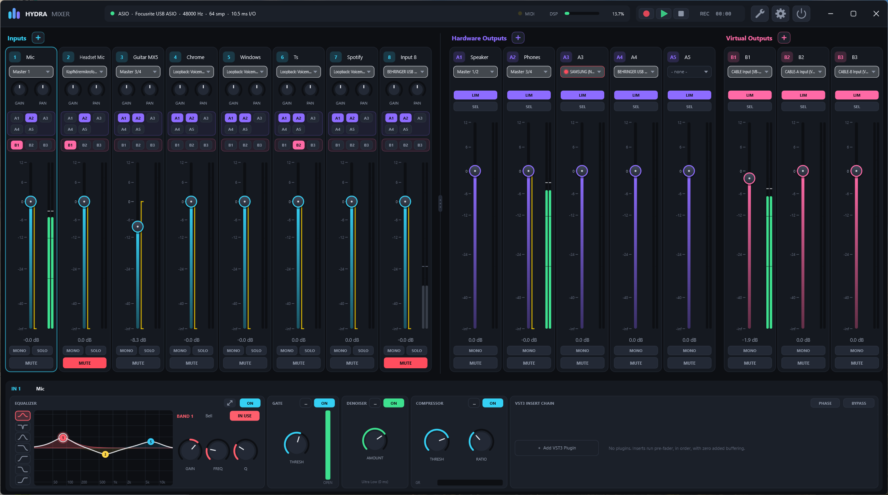

Hydra Mixer Wiki
Hydra Mixer ist ein virtueller Audiomixer für Windows mit möglichst geringer Latenz, eine Alternative zu Voicemeeter Potato. Diese Seite führt dich Schritt für Schritt durch die Einrichtung und erklärt jede Funktion zum Nachschlagen.

Wo fange ich an?
Neu hier?
Das Tutorial bringt dich in 10 Minuten vom Download zum ersten Mix.
Von Voicemeeter?
Einstellungen importieren und die Unterschiede kennen.
Konkretes Ziel?
Rezepte: Stream-Mix, Mikro entrauschen, Spotify einbinden …
Problem?
Kein Ton, Knackser, gelbe Punkte: Lösungen.
1Installation
- Lade
HydraMixer-0.6-win64.zipvon der Releases-Seite herunter. - Entpacke das Archiv an einen beliebigen Ort, z. B.
C:\Tools\Hydra Mixer. Es gibt keinen Installer und keine Laufzeitumgebung. - Starte
Hydra Mixer.exe. Beim ersten Start wählt Hydra ein Standardgerät. Danach suchst du dir in den Settings dein Master-Gerät aus.
Voraussetzungen
- Windows 10 oder 11, 64 Bit.
- Ein Prozessor mit AVX2 (praktisch alle Intel-CPUs ab 2013 und AMD-CPUs ab 2015).
- Empfohlen: ein Audio-Interface mit ASIO-Treiber. Ohne ASIO funktioniert Hydra auch mit Windows-Audio (WASAPI), dann ist die Latenz etwas höher.
Aus dem Quellcode bauen
Benötigt werden die Visual Studio 2026 Build Tools (MSVC, C++-Workload), CMake ab 3.25 und Ninja.
git clone --recursive https://github.com/TicT4x/Hydra-Mixer.git
cd Hydra-Mixer
.\build.ps1 # Release
.\build.ps1 -Config DebugDie fertige App liegt unter build\Release\HydraMixer_artefacts\Release\Hydra Mixer.exe, die Tests unter build\Release\HydraTests_artefacts\Release\HydraTests.exe.
2Tutorial: Erste Schritte
In diesem Tutorial richtest du einen typischen Mix ein: Mikrofon und Spiel/Musik rein, Kopfhörer und Stream raus.
Schritt 1: Master-Gerät wählen
- Klicke oben rechts auf das Zahnrad (oder auf den Statustext mit dem Treibernamen in der Top-Bar). Es öffnet sich Settings → Audio Engine.
- Wähle unter Driver ASIO und darunter dein Interface. Hast du kein ASIO, nimm Windows Audio (Low Latency Mode).
- Stelle Sample rate (meist 48000) und Buffer size ein. Kleiner Puffer = weniger Latenz, aber mehr CPU-Last. Bei ASIO legst du die Puffergröße oft im ASIO Control Panel fest.
- Klicke auf Apply / Restart.
Schritt 2: Mikrofon auf einen Input legen
- Klicke im ersten Input-Strip auf den Geräte-Chip unter dem Kanalnamen. Es öffnet sich die Geräteauswahl.
- Wähle links Master (bzw. Hardware) und rechts den Kanal deines Mikrofons, z. B. Mono 1. Der Klick übernimmt sofort, ein Doppelklick übernimmt und schließt.
- Sprich ins Mikrofon. Der Pegelmeter im Strip schlägt aus. Ist er zu leise, drehe am GAIN-Knob oben im Strip.
- Doppelklick auf den Kanalnamen benennt ihn um, z. B. in „Mic“.
Schritt 3: Spiel oder Musik einbinden
- Öffne im zweiten Input die Geräteauswahl und wähle Application.
- Wähle die App, z. B.
Spotify.exe. Die Liste zeigt nur Apps, die gerade Ton ausgeben. Fehlt sie, starte die Wiedergabe und klicke Refresh. - Damit du die App nicht doppelt hörst, stelle ihre Ausgabe in Windows-Einstellungen → System → Sound → Lautstärkemixer auf ein Gerät, das du nicht abhörst.
Alternativen: Loopback nimmt alles auf, was Windows auf einem Wiedergabegerät abspielt. Mehr unter Virtuelle Geräte.
Schritt 4: Ausgänge festlegen
- Rechts siehst du die Hardware Outputs (A1, A2, …) und die Virtual Outputs (B1, B2, …).
- Klicke beim Bus A1 auf den Geräte-Chip und wähle deine Kopfhörer bzw. Lautsprecher.
- Für einen Stream-Mix gibst du z. B. B1 auf ein virtuelles Kabel aus, das OBS als Mikrofon aufnimmt (siehe Virtuelle Geräte), oder nimmst B1 mit dem Recorder auf.
Schritt 5: Routing
- Jeder Input-Strip hat Routing-Buttons A1 A2 A3 … und B1 B2 …. Ein leuchtender Button heißt: Dieser Input geht auf diesen Bus.
- Schalte beim Mikrofon z. B. B1 ein (Stream) und bei der Musik A1 und B1 (du hörst sie, der Stream auch).
- Mit den Fadern stellst du die Lautstärke ein. Klick auf die dB-Zahl unter dem Fader erlaubt die direkte Eingabe, z. B.
-6.
Schritt 6: Mikrofon verbessern
- Klicke auf den Mic-Strip. Unten im Inspector erscheinen seine Effekte.
- Schalte den Denoiser ein (entfernt Lüfter, Tastatur, Rauschen).
- Optional: EQ mit Low Cut bei ca. 80 Hz, Gate mit Voice Key, Kompressor mit Auto Gain.
3Grundkonzepte
Inputs, Hardware- und Virtual Outputs
| Begriff | Anzahl | Bedeutung |
|---|---|---|
| Input (IN 1–16) | bis 16, Standard 8 | Eine Signalquelle: Mikrofon, Interface-Kanal, App, Loopback, virtuelles Kabel. Jeder Input hat seine eigene Effektkette. |
| Hardware Output (A1–A8) | bis 8, Standard 5 | Ein Ausgangsbus, meist auf echte Ausgänge (Kopfhörer, Lautsprecher). |
| Virtual Output (B1–B8) | bis 8, Standard 3 | Ein Bus für Mixe, die nicht direkt abgehört werden: Stream, Aufnahme, Discord. Kann ebenfalls auf ein Gerät (z. B. ein virtuelles Kabel) ausgegeben werden. |
A- und B-Busse funktionieren technisch gleich. Der Unterschied ist die Gruppierung in der Oberfläche, der Recorder nimmt B-Busse auf, und Monitoring ersetzt einen A-Bus.
Signalfluss
Jeder Input durchläuft diese Kette, in dieser Reihenfolge:
Jeder Bus summiert die gerouteten Inputs und verarbeitet sie weiter:
Das Master-Gerät als Clock
Jedes Audiogerät hat seinen eigenen Takt (Clock), und keine zwei Clocks laufen exakt gleich schnell. Hydra löst das so:
- Das Master-Gerät (ideal ASIO) ist die einzige Clock. Seine Kanäle haben keine zusätzliche Latenz.
- Alle anderen Geräte hängen über einen Ringpuffer und einen Resampler daran. Ein selbstregelnder Drift-Ausgleich passt die Abtastrate laufend minimal an, damit der Puffer weder leer- noch überläuft. Das kostet ein paar Millisekunden Latenz.
- Mehrere Kanäle desselben Interfaces bleiben untereinander sample-genau.
Automatisches Speichern
Jede Änderung wird nach ca. 2 Sekunden in session.xml gespeichert. Bei jedem Start wird zusätzlich ein Backup angelegt (bis zu 40). Siehe Backup & Transfer.
4Überblick Hauptfenster
Das Hauptfenster besteht aus drei Bereichen:
| Bereich | Lage | Inhalt |
|---|---|---|
| Top-Bar | oben | Logo, Status der Audio-Engine, Recorder-Mini, Werkzeuge, DSP-Anzeige, Settings, Ausschalten, Fensterknöpfe. Die Top-Bar ist gleichzeitig die Titelleiste: an freien Stellen ziehen verschiebt das Fenster. |
| Strips | Mitte | Links die Inputs, rechts die Hardware- und Virtual Outputs. Beide Seiten scrollen getrennt seitwärts. |
| Inspector | unten | Die Effekte des ausgewählten Kanals (Denoiser, EQ, Gate, Kompressor, VST3, Limiter) oder der Recorder. |
Beim Start wird das Fenster genau so breit, dass alle Strips nebeneinander passen. Größe von Oberfläche und Schrift lassen sich unter Settings → General einstellen (75–200 %).
5Top-Bar
| Element | Funktion |
|---|---|
| Logo & Statustext | Zeigt Treiber und Master-Gerät. Klick öffnet Settings → Audio Engine. Ist die Engine gestoppt, steht das hier. |
| Recorder-Mini | Aufnahme, Play/Pause, Stop. Wird es eng, wird daraus ein Kassetten-Symbol, das den Recorder öffnet. |
| Schraubenschlüssel (Tools) | Menü mit Scene Editor, MIDI Learn Mode, MIDI Map, Latency Finder, Sync Delay, DSP Load, Recorder und Restart Audio Engine. Im Learn-Modus leuchtet der Schlüssel gelb. |
| DSP-Anzeige | Anteil der verfügbaren Rechenzeit pro Audioblock. Klick öffnet DSP Load. |
| Zahnrad | Öffnet die Settings. |
| Power | Beendet Hydra Mixer (mit Bestätigung). Wichtig, wenn das Schließen-Kreuz nur in den Tray minimiert. |
6Strips (Kanalzüge)
Input-Strip
Von oben nach unten:
- Name: Doppelklick zum Umbenennen.
- Geräte-Chip: aktuelle Quelle. Klick öffnet die Geräteauswahl. Farbige Punkte links vom Namen zeigen Probleme (siehe unten).
- GAIN: Eingangsverstärkung vor allen Effekten.
- Routing-Buttons: A1, A2, … und B1, B2, … (je drei pro Reihe, nur aktive Busse).
- MONO, SOLO, MUTE.
- Fader mit Pegelmeter und dB-Anzeige, darunter Pan.
Ein Klick irgendwo in einen Strip wählt ihn im Inspector aus. Ist ein Kanal gemutet oder durch Solo stumm, zeigt der Meter grau den Pegel, den er ohne Mute hätte.
Bus-Strip
Name, Ausgabegerät, SEL (siehe SEL & Monitoring), MONO, MUTE, Fader mit Meter.
Status-Punkte am Geräte-Chip
| Punkt | Bedeutung |
|---|---|
| Rot | Gerät offline (abgezogen, belegt oder fehlerhaft). |
| Gelb | Dropouts in den letzten 2 Minuten, oder ein Hinweis: wartet auf die App, „Hydra Virtual“ ohne Treiber. |
Fahre mit der Maus über den Punkt: Der Tooltip erklärt das Problem, bei Dropouts mit Anzahl und Alter („12 s ago“).
Platz verteilen
Zwischen Inputs und Outputs liegt ein Trenner. Ziehen verschiebt den Platz, Doppelklick stellt die Standardaufteilung her. Das Mausrad scrollt die Strips seitwärts. Ist das Fenster zu niedrig, werden die Strips verkleinert statt vertikal zu scrollen.
7Regler bedienen
Alle Fader, Knobs und Schalter funktionieren gleich:
| Aktion | Wirkung |
|---|---|
| Ziehen | Wert ändern. Mit Shift fein. |
| Klick auf die Fader-Bahn | Fader gleitet zu dieser Position (mit Shift nicht). |
| Mausrad | Wert schrittweise ändern. Mit Shift feinere Schritte. |
| Doppelklick | Auf Standardwert zurücksetzen. |
| Klick auf den Wert unter dem Regler | Textfeld für direkte Eingabe, z. B. -6, 2.5k, -inf. |
| Rechtsklick | Kontextmenü: MIDI Learn, Clear MIDI Mapping, MIDI Range (calibrate), Assign Keyboard Shortcut... (bei Schaltern), Reset to Default. |
Jeder Regler ist automatisch per MIDI steuerbar, jeder Schalter zusätzlich per Tastenkürzel.
8Kanäle verwalten
Hinzufügen
Klicke auf das + neben der Überschrift Inputs, Hardware Outputs oder Virtual Outputs. Der nächste freie Platz wird aktiviert (max. 16 Inputs, 8 A-, 8 B-Busse).
Umbenennen und Entfernen
Rechtsklick auf Kopf oder Hintergrund eines Strips → Rename oder Remove. Beim Entfernen werden Einstellungen, Plugins, MIDI-Zuweisungen und Tastenkürzel des Kanals zurückgesetzt (mit Bestätigung). Mindestens ein Input und ein A-Bus bleiben immer.
Reihenfolge ändern
- Rechtsklick auf einen Strip → Change Order.... Über den Strips erscheint eine Leiste mit Done und Discard.
- Ziehe die Strips innerhalb ihrer Gruppe (Inputs, A-Busse, B-Busse) an die gewünschte Stelle.
- Done (Enter) übernimmt, Discard (Esc) verwirft.
Ein Kanal bekommt die Nummer seiner neuen Position. Bei Bussen wandern Routing, Sends, Recorder- und Monitor-Einstellungen mit. Liegen MIDI-Zuweisungen oder Tastenkürzel auf verschobenen Kanälen, fragt Hydra:
- Follow the channels: Dein Controller steuert weiterhin dieselben Kanäle, jetzt an neuer Position.
- Keep positions: Jeder Hardware-Regler bleibt auf seiner Position (Fader 1 steuert weiter Strip 1, also jetzt einen anderen Kanal).
Danach wird die Undo-Historie geleert.
9Geräteauswahl
Ein Klick auf den Geräte-Chip eines Strips öffnet das Fenster Input source bzw. Output device. Es hat drei Spalten: Connection → Device → Channels. Darunter steht eine Erklärung der gewählten Verbindungsart. Oben zeigt „Now: …“ die aktuelle Wahl.
| Verbindungsart | Wofür | Latenz |
|---|---|---|
| None | Kanal empfängt nichts bzw. Bus wird gemischt, aber nicht ausgegeben. | – |
| Master / Hardware | Kanäle des Master-Geräts. | am geringsten, kein Zusatzpuffer |
| Other ASIO Devices | Ein zweites ASIO-Interface, synchronisiert auf die Master-Clock. | gering, plus Clock-Sync-Puffer |
| Windows Audio (Low Latency) | Windows-Geräte im geteilten Modus mit kleinem Puffer. | gering |
| Windows Audio (Exclusive) | Exklusiver Zugriff auf das Gerät. Andere Apps können es dann nicht nutzen. | am geringsten bei WASAPI |
| Shared (compatibility) | Klassischer geteilter Modus für Geräte, die nichts anderes können. | höher |
| Application (nur Inputs) | Ton genau einer App samt Kindprozessen, verbindet sich bei App-Neustart automatisch neu. | mittel |
| Virtual Cable | VB-CABLE oder Virtual Audio Cable, wenn installiert. | mittel |
| Loopback (nur Inputs) | Alles, was Windows auf einem Wiedergabegerät abspielt. | mittel bis höher |
Bedienung
- Klick auf einen Kanal übernimmt sofort, das Fenster bleibt offen. Doppelklick übernimmt und schließt.
- Geräte mit nur einer Option (Apps, Kabel, Loopback) werden schon mit dem Klick auf das Gerät gewählt.
- Punkte markieren den Weg zur aktuellen Wahl, ein Haken den aktuellen Kanal.
- Kanäle gibt es als Stereopaare (Stereo 1/2, …) oder Mono.
- Refresh liest Geräte und Apps neu ein. Esc, Enter oder Done schließen.
- Das Fenster folgt dem zuletzt angeklickten Strip, du kannst also mehrere Kanäle nacheinander einrichten.
10Inspector
Der Inspector unten zeigt die Effekte des ausgewählten Kanals nebeneinander in einer Effektleiste, die als Ganzes seitwärts scrollt. Jede Sektion hat oben einen Ein-Schalter (z. B. EQ ON, GATE ON). Die wichtigsten Regler sind direkt sichtbar, alle weiteren im …-Menü (More settings).
| Kanal | Sektionen |
|---|---|
| Input | Denoiser · Equalizer · Gate · Compressor · VST3 Insert Chain (mit PHASE und BYPASS im Kopf) |
| Bus | Equalizer · VST3 Insert Chain · Limiter |
| Recorder | Record Source · Recording · Play To (siehe Recorder) |
11Denoiser
Jeder Input hat einen eingebauten Rauschunterdrücker auf Basis von RNNoise, einem neuronalen Netz für Sprache. Er entfernt Lüfter, Tastaturklappern, Brummen und Raumrauschen. Standardmäßig ist er aus.
Regler
| Regler | Bedeutung |
|---|---|
| DENOISER ON | Ein/Aus. |
| AMOUNT | Mischung aus Original und entrauschtem Signal. Beide sind zeitlich exakt ausgerichtet, es gibt also keine Kammfilter-Effekte. |
| Latenz-Modus (im …-Menü) | Siehe Tabelle. |
| Modus | Latenz | Hinweis |
|---|---|---|
| Ultra Low | 0 ms | Keine Verzögerung, Wortanfänge können minimal leiden. |
| Low (Standard) | 10 ms | Guter Kompromiss für Live-Sprache. |
| Aligned | 20 ms | Bessere Qualität. |
| Native HQ | 30 ms | Originalverhalten von RNNoise, beste Qualität. |
Kosten: ca. 1,8 % eines CPU-Kerns pro Stereokanal.
12Equalizer
Inputs und Busse haben denselben parametrischen EQ mit 8 Bändern. Ein Band ist nur sichtbar (als farbiger Punkt), wenn es benutzt wird. Ein neuer Kanal startet ohne Punkte.
Bedienung der Kurve
| Aktion | Wirkung |
|---|---|
| Hover nahe der Kurve | Ein Geisterpunkt zeigt, wo ein neues Band entstehen würde. |
| Klick auf freie Stelle | Neues Band (Bell) an dieser Stelle. |
| Punkt ziehen | Frequenz (waagrecht) und Gain (senkrecht). |
| Mausrad über Punkt | Güte (Q). |
| Doppelklick / Rechtsklick auf Punkt | Entfernen bzw. Typ ändern. |
| Typ-Leiste + Knobs | Typ, GAIN, FREQ, Q des gewählten Bands, Remove zum Entfernen. |
Filtertypen
| Typ | Wirkung | Typischer Einsatz |
|---|---|---|
| Bell | Anheben/Absenken um eine Frequenz. | Stimme präsenter (+3 dB bei 3 kHz), Dröhnen raus (−4 dB bei 250 Hz). |
| Notch | Sehr schmale Absenkung. | Brummen (50 Hz) oder Pfeifton entfernen. |
| Band Pass | Nur ein Frequenzbereich bleibt. | Telefon-/Funk-Effekt. |
| High Cut | Hohe Frequenzen weg. | Zischen, Rauschen. |
| Low Cut | Tiefe Frequenzen weg. | Trittschall, Pop-Geräusche beim Mikro (ca. 80 Hz). |
| Low Shelf / High Shelf | Alles unter/über einer Frequenz anheben oder absenken. | Bass oder Höhen insgesamt. |
Q-Bereich 0,1–100, Gain ±18 dB.
Großes EQ-Fenster
Der Pfeil-Button im EQ-Kopf öffnet ein eigenes Fenster mit großer Kurve, allen Bändern mit Werten und einem Live-Spektrum des Signals nach dem EQ (Skala rechts in dBFS). Das Fenster folgt dem gewählten Kanal. Das Spektrum wird nur berechnet, solange das Fenster offen ist.
13Gate & Voice Key
Ein Gate schaltet den Kanal leise, solange das Signal unter einer Schwelle liegt, z. B. damit das Mikrofon in Sprechpausen keine Hintergrundgeräusche überträgt.
| Regler | Bedeutung |
|---|---|
| THRESHOLD | Pegel, ab dem das Gate öffnet. |
| RANGE | Wie stark im geschlossenen Zustand abgesenkt wird (z. B. −80 dB = praktisch stumm, −10 dB = nur leiser). |
| ATTACK | Wie schnell das Gate öffnet. |
| HOLD | Wie lange es mindestens offen bleibt. |
| RELEASE | Wie schnell es danach schließt. |
| SIDECHAIN BP + SC FREQ | Das Gate „hört“ nur auf einen Frequenzbereich, z. B. um tiefes Brummen zu ignorieren. |
| VOICE KEY + VOICE THR | Das Gate öffnet nur, wenn der Pegel über THRESHOLD liegt und der Denoiser Sprache erkennt (Wahrscheinlichkeit über VOICE THR). |
14Kompressor
Der Kompressor gleicht Lautstärkeunterschiede aus: Laute Stellen werden abgesenkt, das Ganze wird gleichmäßiger. Eine Kennlinie zeigt die Wirkung samt aktueller Gain-Reduktion.
| Regler | Bedeutung |
|---|---|
| INPUT | Pegel vor dem Kompressor. |
| THRESH | Ab diesem Pegel wird komprimiert. |
| RATIO | Stärke. 4:1 heißt: 4 dB mehr Eingang ergeben 1 dB mehr Ausgang. |
| KNEE | Weicher Übergang um die Schwelle. |
| ATTACK / RELEASE | Reaktionszeit beim Einsetzen bzw. Loslassen. |
| MAKEUP | Pegel nach dem Kompressor wieder anheben. |
| AUTO GAIN | Gleicht die Reduktion bei 0 dBFS automatisch aus, MAKEUP ist dann nicht nötig. |
Startwerte für Sprache: Threshold −20 dB, Ratio 3:1, Attack 10 ms, Release 150 ms, Auto Gain an.
15VST3-Plugins
Jeder Input und jeder Bus hat eine VST3 Insert Chain. Die Plugins laufen der Reihe nach, ohne zusätzliche Pufferung (ihre eigene Latenz zeigt der Latency Finder).
Plugins einrichten
- Settings → Plugins: Suchordner eintragen (einer pro Zeile, Standard ist der übliche VST3-Ordner) und Scan for plugins klicken. Ein Plugin, das beim Scan abstürzt, wird gemerkt und künftig übersprungen.
- Im Inspector: + Add VST3 Plugin (leere Kette) bzw. das + hinter der letzten Karte.
Bedienung
- Editor öffnen: Doppelklick auf die Karte oder EDIT.
- Reihenfolge: Karten per Drag & Drop verschieben.
- Bypass: pro Plugin auf der Karte, für die ganze Kette mit BYPASS im Sektionskopf.
- Entfernen: Mülleimer-Symbol.
- PHASE im Kopf der Sektion (Inputs) kehrt die Polarität um.
16Busse & Limiter
Jeder Bus hat Fader, Mute, Mono, den 8-Band-EQ, eine VST3-Kette, einen Limiter und ein frei wählbares Ausgabegerät.
Limiter
Der Limiter am Ende des Busses verhindert, dass der Pegel über CEILING steigt, z. B. damit ein Stream nie übersteuert. Er arbeitet latenzfrei.
Sends
Jeder Input hat pro Bus einen eigenen Send-Pegel (Standard 0 dB), der nach dem Strip-Fader wirkt. Eingestellt wird er über SEL.
17SEL & Monitoring
SEL: eigener Mix pro Bus
Drückst du SEL an einem Bus, steuern die Input-Fader nicht mehr die Gesamtlautstärke, sondern nur noch den Pegel jedes Inputs auf diesem Bus. Nicht geroutete Inputs werden gedimmt. So baust du z. B. einen Stream-Mix, in dem die Musik leiser ist als in deinen Kopfhörern.
- SEL an B1 drücken. Die Fader springen auf die Send-Pegel für B1.
- Musik-Fader auf −12 dB ziehen. Im Stream ist die Musik jetzt leiser, in deinen Kopfhörern unverändert.
- SEL erneut drücken, um zur normalen Ansicht zurückzukehren.
Es kann immer nur ein Bus SEL haben. Ein MIDI-Fader, der den Hauptfader eines Inputs steuert, steuert bei aktivem SEL ebenfalls den Send, Motorfader springen mit.
Monitoring
Unter Settings → General → MONITORING (SEL) schaltest du Monitor selected bus ein und wählst Monitor output (A1–A5). Dann ersetzt der SEL-Bus die Summe dieses A-Busses: Du hörst auf deinen Kopfhörern genau den Mix, den du gerade bearbeitest (z. B. den Stream). EQ, Fader und Limiter des Monitor-Busses wirken weiter.
18Recorder
Der Recorder nimmt einen B-Bus als WAV auf und spielt Audiodateien auf beliebige Busse. Öffnen über Tools → Recorder oder die Zeitanzeige in der Top-Bar. Er hat drei Bereiche:
| Bereich | Inhalt |
|---|---|
| Record Source (links) | Welcher B-Bus aufgenommen wird, Zielordner (Standard Dokumente\Hydra Recordings), Format WAV 16 / 24 / 32-bit float. |
| Recording (Mitte) | Transport, Zeit, Waveform, Dateiname, Datei laden/zeigen/löschen. |
| Play To (rechts) | A- und B-Busse, auf die die Wiedergabe geht, und Wiedergabepegel. |
Transport
| Symbol | Funktion |
|---|---|
| ● Aufnahme | Startet die Aufnahme des gewählten B-Busses (nach Fader und Limiter). Zweiter Klick stoppt. |
| ▶ / ❚❚ | Play / Pause. Pause merkt sich die Position. Am Dateiende geht es zurück auf 0. |
| ■ Stop | Beendet Aufnahme und Wiedergabe, Position auf 0. |
| Loop | Wiederholt die Datei bzw. den Trim-Bereich. |
| Papierkorb | Entlädt die Datei und verschiebt sie in den Windows-Papierkorb (mit Bestätigung). |
Waveform, Seek und Trim
- Die Waveform wächst während der Aufnahme live mit.
- Klick oder Ziehen in die Waveform springt an diese Stelle. Im Stopp setzt das den Startpunkt für Play.
- Die Griffe am linken und rechten Rand nach innen ziehen setzt In- und Out-Punkt (nicht destruktiv, außerhalb grau). Wiedergabe und Loop laufen nur in diesem Bereich.
- Cut schreibt den Bereich in die Datei (WAV: Original geht in den Papierkorb; andere Formate: neue Datei
name_trimmed.wav). Reset setzt die Griffe zurück.
Abspielbar sind WAV, AIFF, FLAC, Ogg und MP3, mit automatischer Anpassung der Abtastrate. Last Take lädt die letzte Aufnahme.
19Szenen
Eine Szene ist ein Schnappschuss aller Mixer-Parameter (Fader, Mutes, Routing, Effekte, Sends …). Nicht enthalten sind Geräte, Kanalnamen, Plugins und welche Kanäle aktiv sind. Typische Szenen: „Gaming“, „Stream“, „Call“, „Musik“.
Öffnen: Tools → Scene Editor. Die Szenen erscheinen als Leiste links im Hauptfenster.
| Aktion | Wirkung |
|---|---|
| + / New scene | Neue Szene aus dem aktuellen Mixer. |
| Klick auf eine Szene | Lädt sie sofort (ohne Rückfrage) und macht sie zur bearbeiteten Szene. |
| Mixer verändern | Die Zeile zeigt „edited - not saved“ und die Anzahl der Änderungen. |
| Save (Diskette) | Übernimmt den aktuellen Mixer in die Szene. |
| Recall (Pfeil zurück) | Lädt die Szene erneut und verwirft die ungespeicherten Änderungen. |
| …-Menü | Rename, Duplicate, Move up/down, Delete, Export, Import. |
| STEP ◀ ▶ | Vorherige/nächste Szene. |
| Rechtsklick auf Szene / Pfeile | MIDI Learn oder Tastenkürzel zum Abrufen. |
Szenen lassen sich als .hydrascenes-Datei exportieren und importieren (alle oder nur die gewählte). Beim Löschen oder Verschieben wandern MIDI-Zuweisungen und Tastenkürzel mit.
20Latency Finder
Tools → Latency Finder zeigt, wie viel Verzögerung jeder Weg vom Input zum Output hat und woher sie kommt. Es ist die einzige Stelle in Hydra mit Latenzwerten.
Aufbau
- Matrix (oben): Inputs × Outputs mit der Gesamtlatenz jedes gerouteten Pfads. Klick auf eine Zelle zeigt genau diesen Pfad.
- Signalfluss: Input-Gerät → Denoiser → jedes Plugin → Sync Delay → Bus-Plugins → Output-Gerät. Jede Stufe zeigt „+x ms“ (was sie hinzufügt), ihren Anteil in % und „at y ms“ (Summe bis dahin).
- Latency share: Donut und Rangliste der Anteile für den gewählten Pfad.
Fährst du mit der Maus über ein Input- oder Output-Gerät, erklärt ein Tooltip, woraus sich seine Latenz zusammensetzt (Puffer, Treiber/Wandler, Clock-Sync-Puffer) und wie du sie senkst. Klick auf eine Zeile wählt den Kanal auch im Hauptfenster.
- Kleinere Puffergröße im ASIO Control Panel bzw. in Settings → Audio Engine.
- Wichtige Kanäle auf das Master-Gerät legen (kein Clock-Sync-Puffer).
- Windows-Geräte im Exclusive- oder Low-Latency-Modus statt Shared.
- Denoiser-Modus Ultra Low oder Low.
- Plugins mit Lookahead in den Zero-Latency-Modus schalten oder umgehen.
21Sync Delay
Verschiedene Geräte haben unterschiedliche Latenz. Kommt z. B. die Kamera über einen langsameren Weg als das Mikrofon, oder laufen zwei Ausgänge auseinander, gleicht Sync Delay das aus.
Öffnen: Tools → Sync Delay. Pro Gruppe (Inputs, Hardware Outputs, Virtual Outputs) siehst du jeden Kanal mit:
| Spalte | Bedeutung |
|---|---|
| LATENCY | Eigene Latenz des Kanals. |
| AUTO SYNC | Schalter. Alle Kanäle einer Gruppe mit Auto Sync werden auf den langsamsten von ihnen verzögert. Der langsamste ist mit „slowest: sets the time“ markiert. |
| AUTO DELAY | Automatisch berechnete Verzögerung, folgt der Live-Latenz. |
| MANUAL DELAY | Zusätzliche Verzögerung von Hand (0–500 ms), z. B. für ein weiter entferntes Mikrofon oder Lippensynchronität im Stream. |
| RESULT | Gesamtergebnis. Der Balken zeigt eigene Latenz (voll) und Delay (schraffiert). |
Sync all / Sync none schalten Auto Sync für die ganze Gruppe. Delay-Werte sind MIDI-lernbar und Teil von Undo und Szenen. Änderungen werden mit einem kurzen Crossfade übernommen.
22DSP Load
Klick auf die DSP-Anzeige in der Top-Bar (oder Tools → DSP Load) zeigt, was wie viel Rechenzeit kostet. Werte sind Anteile der verfügbaren Zeit pro Audioblock, gemittelt über 1 Sekunde, mit Peak.
- Gesamtlast als Balken mit Peak-Marker.
- Biggest consumers: die drei teuersten Stufen.
- Tabelle: eine Zeile pro Kanal in Mixer-Reihenfolge, Spalten Denoiser / EQ / Gate / Comp / Plugins / Limiter / Rest. Zellen sind nach Last eingefärbt.
- Engine-Zeile: Resampling der Zweitgeräte, Recorder, Mixing.
Gemessen wird nur, solange das Fenster offen ist. Klick auf eine Zeile wählt den Kanal im Mixer.
23Undo / Redo
Ctrl+Z macht die letzte Änderung rückgängig, Ctrl+Y (oder Ctrl+Shift+Z) stellt sie wieder her. Das gilt im Hauptfenster und in allen Werkzeugfenstern. Ein Hinweis zeigt, was rückgängig gemacht wurde.
- Erfasst werden alle gespeicherten Parameter in einer Historie: Fader, Routing, EQ, Gate usw. Bis zu 200 Schritte.
- Ein Schritt entsteht, wenn eine Bewegung abgeschlossen ist (Maus losgelassen und kurz Ruhe).
- Nicht erfasst: Änderungen per MIDI, Kanäle hinzufügen/entfernen, Namen, Geräte, Plugins.
24MIDI Learn
Jeder Regler und Schalter in Hydra lässt sich mit einem MIDI-Controller steuern.
Einrichten
- Settings → MIDI: Unter MIDI inputs (controllers) deinen Controller aktivieren. Optional unter Feedback output denselben Controller als Ausgang wählen (für LEDs und Motorfader).
- Rechtsklick auf einen Regler → MIDI Learn.
- Bewege den Hardware-Regler oder drücke die Taste. Fertig.
Für viele Zuweisungen am Stück: Tools → MIDI Learn Mode. Dann reicht ein Linksklick auf den Regler und eine Bewegung am Controller, für beliebig viele Regler nacheinander. Der Schraubenschlüssel leuchtet gelb, die Statuszeile zeigt einen Hinweis.
Modi
| Modus | Verhalten | Für |
|---|---|---|
| Absolute | Position des Hardware-Reglers = Wert. | Fader, Potis |
| Toggle | Jeder Druck schaltet um. | Mute-Tasten |
| Momentary | An, solange gedrückt. | Push-to-Talk |
| Relative | Endlos-Encoder senden Schritte. | Drehgeber ohne Anschlag |
Unterstützt werden CC, Note und Pitch Bend. Jede Zuweisung kann invertiert werden.
MIDI Map
Tools → MIDI Map listet alle Zuweisungen in einer Tabelle: Modus, Invert, Bereich ändern, einzelne Zuweisungen löschen oder Remove all.
MIDI-Range
Rechtsklick → MIDI Range (calibrate) legt fest, welchen Wertebereich der Hardware-Regler überstreicht, z. B. nur −∞ bis 0 dB. Damit hast du mehr Feinauflösung im genutzten Bereich. Optionen: aktueller Wert als Minimum/Maximum, Presets (Fader: -inf .. 0 dB, -inf .. +6 dB, Full range) oder Werte in der MIDI Map eintippen. Ein gelber Balken am Fader zeigt den Bereich. Feedback an Motorfader wird passend umgerechnet.
Global: Settings → MIDI → MIDI faders stop at 0 dB setzt das Maximum aller Fader-Zuweisungen auf 0 dB (statt +12 dB), auch für künftig gelernte.
25APC mini & LED-Feedback
Für Controller mit Pad-Raster (z. B. Akai APC mini) färbt Hydra die Pads nach Zustand ein:
| Pad | Farbe (APC mini) |
|---|---|
| Zugewiesen und an | Grün |
| Zugewiesen und aus | Gelb |
| Nicht zugewiesen, in der Reihe/Spalte eines gemuteten Kanals | Rot |
| Nicht zugewiesen | Aus |
Hydra erkennt automatisch, ob das Raster reihen- oder spaltenweise belegt ist. Profile unter Settings → MIDI → LED feedback profile: Generic, APC mini mk1, APC mini mk2. Wird ein „APC MINI“ als Feedback-Ausgang gewählt, wird das passende Profil automatisch gesetzt. Beim Beenden gehen alle LEDs aus.
Beim Start fragt Hydra die aktuellen Faderpositionen einer APC mini ab, damit Mixer und Hardware übereinstimmen (bei mk1 noch unbestätigt). Andere Controller können ihre Position nicht melden: Dort übernimmt Hydra den Wert erst, wenn du den Fader bewegst.
26Tastenkürzel
Jeder Schalter (Mute, Solo, Routing, SEL, Szenen, Recorder …) lässt sich auf eine Taste oder Maustaste legen.
- Rechtsklick auf den Schalter → Assign Keyboard Shortcut...
- Drücke die gewünschte Kombination bzw. Maustaste.
| Kombination | Wirkt |
|---|---|
| Mit Ctrl oder Alt, oder eine F-Taste | Global, also auch im Spiel oder wenn Hydra im Tray ist. |
| Ohne Modifier (z. B. nur M) | Nur wenn Hydra den Fokus hat. |
| Mittlere Maustaste, Daumentasten (optional mit Ctrl/Alt/Shift) | Immer global. Der Klick wird zusätzlich an die andere App weitergegeben. |
Ist eine Kombination bereits von einer anderen App global belegt, gilt sie in Hydra nur bei Fokus (ein Hinweis sagt das). Ändern oder entfernen über dasselbe Rechtsklick-Menü.
27Settings
Öffnen über das Zahnrad in der Top-Bar.
General
- DISPLAY: Interface size (Größe aller Elemente) und Text size, je 75–200 %.
- MONITORING (SEL): Monitor selected bus und Monitor output, siehe SEL & Monitoring.
- STARTUP, WINDOW & SYSTEM TRAY:
- Start Hydra Mixer when Windows starts: startet direkt bei der Anmeldung mit hoher Priorität. Ist der ASIO-Treiber noch nicht bereit, versucht Hydra es 90 Sekunden lang erneut.
- Show Hydra Mixer in the system tray, Close button hides to the tray (Audio läuft weiter), Minimise to the tray, Start hidden in the tray.
- Shut down Hydra Mixer.
Audio Engine
Driver (ASIO, Windows Audio …), Audio device, Sample rate, Buffer size, ASIO Control Panel, Apply / Restart. Das hier gewählte Gerät ist das Master-Gerät.
MIDI
MIDI-Eingänge, Feedback-Ausgang, LED-Profil, „MIDI faders stop at 0 dB“. Siehe MIDI Learn und APC mini.
Plugins
VST3-Suchordner und Scan. Siehe VST3-Plugins.
Virtual Cables
Zeigt erkannte virtuelle Kabel und bietet Auto-assign cables. Siehe Virtuelle Geräte.
Backup & Transfer
Siehe nächster Abschnitt.
28Backup & Transfer
Automatische Backups
Hydra legt bei jedem Start und vor jedem Import eine Kopie deiner Einstellungen an (bis zu 40, doppelte werden übersprungen). In Settings → Backup & Transfer → Automatic Backups wählst du eines aus und klickst Restore. Open Folder zeigt den Ordner.
Export / Import
Export Settings... speichert alle Einstellungen in eine Datei, z. B. für einen anderen PC. Import Settings... lädt sie (die aktuellen werden vorher gesichert).
Schutzmechanismen
- Die Session-Datei wird atomar geschrieben, ein Absturz beim Speichern beschädigt sie nicht.
- Eine unlesbare
session.xmlwird beiseite gelegt statt überschrieben. - Wurde die Datei von außen geändert, sichert Hydra sie vor dem nächsten Speichern.
29Voicemeeter-Import
Wenn du von Voicemeeter Potato kommst, kannst du deine Einstellungen übernehmen.
- In Voicemeeter: Menu → Save Settings speichert eine XML-Datei (oft in
Dokumente). - Voicemeeter beenden, damit der ASIO-Treiber frei ist.
- In Hydra: Settings → Backup & Transfer → Import from Voicemeeter. Hydra sucht in
Dokumente, sonst Browse.... Dann Import.
Übernommen werden: Geräte, ASIO-Kanalzuordnungen, Namen, Routing, EQ, Gate, Kompressor, Denoiser und die MIDI-Zuweisungen (bestehende Hydra-Zuweisungen bleiben, außer bei Konflikten). Deine aktuellen Hydra-Einstellungen werden ersetzt, vorher aber gesichert.
Unterschiede zu Voicemeeter
| Voicemeeter | Hydra |
|---|---|
| Virtual Inputs und B-Busse als Windows-Geräte | Werden zu „Hydra Virtual“-Platzhaltern (gelber Punkt). Hydra hat noch keinen eigenen Treiber, siehe Virtuelle Geräte. |
| Mono auf einem ASIO-Kanalpaar | Wird als einzelner Mono-Kanal importiert (kein −6-dB-Verlust bei leerem zweiten Eingang). |
| Macro Buttons, VBAN | Gibt es bewusst nicht. Für Schaltaufgaben: Tastenkürzel und Szenen. |
| Bus-Modi (Composite, Upmix …) | Nicht vorhanden. |
30Virtuelle Geräte (Hydra als Lautsprecher/Mikrofon)
Voicemeeter installiert eigene Windows-Audiogeräte, die jede App als Lautsprecher oder Mikrofon wählen kann. Hydra hat (noch) keinen solchen Treiber: Ein Windows-Audiotreiber lädt mit Secure Boot nur mit einer Microsoft-Signatur über ein EV-Zertifikat, sonst nur im Testmodus, und der bricht Spiele mit Anti-Cheat. Daher gilt vorerst:
- Apps können „Hydra“ nicht als Wiedergabegerät wählen.
- Discord, OBS oder Teams können einen B-Bus nicht direkt als Mikrofon wählen.
Lösungen
1. Application (eingebaut)
Nimmt den Ton einer einzelnen App auf. Nichts zu installieren. App-Ausgabe im Windows-Lautstärkemixer auf ein ungenutztes Gerät stellen.
2. Loopback (eingebaut)
Nimmt alles auf, was Windows auf einem Wiedergabegerät abspielt. Etwas mehr Latenz.
3. VB-CABLE (kostenlos)
VB-CABLE installieren. Rein: App → CABLE Input, Hydra-Input nimmt CABLE Output auf. Raus: B-Bus → CABLE Input, OBS/Discord nimmt CABLE Output.
4. Virtual Audio Cable (kostenpflichtig)
VAC bietet beliebig viele, frei benennbare Kabel. Wird automatisch erkannt.
5. Voicemeeter-Geräte
Ist Voicemeeter installiert, bleiben seine Wiedergabegeräte nutzbar: App spielt auf „Voicemeeter Input“, Hydra nimmt per Loopback auf. Voicemeeter selbst beenden.
Settings → Virtual Cables listet alle erkannten Kabel. Auto-assign cables gibt jedem „Hydra Virtual“-Platzhalter (z. B. aus einem Voicemeeter-Import) das nächste freie Kabel.
31Rezepte
Stream-Mix mit eigener Musiklautstärke
- Mikrofon und Musik auf A1 (Kopfhörer) und B1 routen.
- B1 auf ein virtuelles Kabel ausgeben, in OBS das andere Ende als Audioquelle.
- SEL an B1, Musik-Fader auf ca. −15 dB. SEL aus.
- Optional: Limiter an B1 mit Ceiling −1 dB.
Mikrofon sauber für Calls
- Denoiser an (Modus Low), Amount 100 %.
- EQ: Low Cut bei 80 Hz, Bell +2 dB bei 3 kHz.
- Gate an mit Voice Key, Threshold knapp über dem Grundrauschen.
- Kompressor: Ratio 3:1, Auto Gain an.
- Discord-Mix auf B2 → virtuelles Kabel → Discord-Mikrofon.
Push-to-Talk / Mute-Taste im Spiel
- Rechtsklick auf MUTE des Mikrofons → Assign Keyboard Shortcut → z. B. Ctrl+F12 oder die Daumentaste der Maus.
- Für Push-to-Talk per MIDI: Taste lernen und in der MIDI Map den Modus Momentary wählen (mit Invert, damit Drücken = ungemutet).
Zwischen Setups umschalten
- Mixer für „Gaming“ einstellen, im Scene Editor neue Szene, Save.
- Für „Stream“ wiederholen.
- Rechtsklick auf jede Szene → Tastenkürzel oder MIDI-Taste.
Bild und Ton im Stream synchron
- Im Latency Finder die Latenz des Stream-Busses ablesen.
- In Sync Delay beim Mikrofon-Input ein Manual Delay setzen, bis Lippen und Ton passen, oder Auto Sync in der Gruppe nutzen.
Eine Session aufnehmen
- Alles, was auf die Aufnahme soll, auf B3 routen.
- Recorder: Record Source B3, Format WAV 24, Aufnahme drücken.
- Danach Anfang/Ende mit den Trim-Griffen setzen und Cut.
32Maus & Tastatur
| Wo | Eingabe | Wirkung |
|---|---|---|
| Überall | Ctrl+Z / Ctrl+Y | Undo / Redo |
| Regler | Doppelklick | Standardwert |
| Regler | Shift + Ziehen / Mausrad | Feineinstellung |
| Regler | Klick auf Wert | Wert eintippen (-6, 2.5k, -inf) |
| Regler / Schalter | Rechtsklick | MIDI Learn, Range, Tastenkürzel, Reset |
| Fader | Klick auf die Bahn | Fader gleitet dorthin |
| Strip | Klick | Im Inspector auswählen |
| Strip-Name | Doppelklick | Umbenennen |
| Strip | Rechtsklick | Rename, Remove, Change Order |
| Strip-Bereich | Mausrad | Seitwärts scrollen |
| Trenner Inputs/Outputs | Ziehen / Doppelklick | Platz verteilen / Standard |
| Change Order | Enter / Esc | Done / Discard |
| EQ-Kurve | Klick auf freie Stelle | Band hinzufügen |
| EQ-Punkt | Mausrad | Q ändern |
| EQ-Punkt | Doppelklick / Rechtsklick | Entfernen / Typ |
| Plugin-Karte | Doppelklick / Ziehen | Editor öffnen / Reihenfolge |
| Waveform | Klick / Ränder ziehen | Springen / Trim |
| Dialoge | Enter / Esc | Bestätigen / Abbrechen |
| Geräteauswahl | Doppelklick auf Kanal | Übernehmen und schließen |
33Fehlerbehebung
Gar kein Ton
- Statustext in der Top-Bar prüfen: Steht dort, dass die Engine gestoppt ist, klicken und in Settings → Audio Engine ein Gerät wählen.
- Ist der Input auf einen Bus geroutet, und hat der Bus ein Ausgabegerät?
- Mute, Solo eines anderen Kanals, Fader auf −∞?
- Läuft Voicemeeter oder eine DAW, die den ASIO-Treiber belegt? Beenden.
- Liefert der Treiber ohne Fehlermeldung keinen Ton mehr: Tools → Restart Audio Engine.
Knackser und Aussetzer
- Gelber Punkt am Geräte-Chip? Tooltip zeigt, wie viele Dropouts wann.
- Am Master: Puffergröße erhöhen (z. B. von 64 auf 128 Samples).
- DSP Load öffnen: Liegt der Peak nahe 100 %, teure Plugins oder Denoiser reduzieren.
- Windows-Energiesparplan auf „Höchstleistung“, Bluetooth-Geräte meiden.
Roter Punkt am Gerät
Gerät ist offline: abgezogen, von einer anderen App exklusiv belegt oder der Treiber ist abgestürzt. Zweit-ASIO-Geräte öffnet Hydra automatisch neu. Sonst Gerät neu wählen oder Restart Audio Engine.
Gelber Punkt „waiting for app“
Die gewählte App läuft nicht oder gibt gerade keinen Ton aus. Hydra verbindet sich automatisch, sobald sie spielt.
Gelber Punkt „Hydra Virtual“
Platzhalter aus einem Voicemeeter-Import. Eine echte Quelle zuweisen oder Settings → Virtual Cables → Auto-assign cables.
App nicht in der Liste „Application“
Nur Apps, die gerade Ton ausgeben, erscheinen. Wiedergabe starten, dann Refresh.
Ich höre eine App doppelt
Bei Application-Capture spielt die App weiter auf ihr Windows-Gerät. Im Windows-Lautstärkemixer ihre Ausgabe auf ein Gerät stellen, das du nicht abhörst.
Denoiser ohne Wirkung
Die Engine läuft nicht mit 48 kHz. In Settings → Audio Engine die Sample rate auf 48000 stellen.
Globales Tastenkürzel geht nicht im Spiel
Kombination mit Ctrl oder Alt oder eine F-Taste verwenden. Meldet Hydra, dass sie von einer anderen App belegt ist, eine andere Kombination wählen.
Einstellungen weg oder kaputt
Settings → Backup & Transfer → Automatic Backups → ein Backup wählen → Restore.
34Dateien & Ordner
| Pfad | Inhalt |
|---|---|
%APPDATA%\HydraMixer\session.xml | Alle Einstellungen (wird automatisch gespeichert). |
%APPDATA%\HydraMixer\backups\ | Automatische Backups (max. 40). |
%APPDATA%\HydraMixer\plugins.xml | Liste der gescannten VST3-Plugins. |
%APPDATA%\HydraMixer\scan-crash.txt | Plugins, die beim Scan abgestürzt sind. |
%APPDATA%\HydraMixer\hydra.log | Protokoll (Starts, Speicherungen, Gerätefehler). Bei Fehlerberichten anhängen. |
Dokumente\Hydra Recordings\ | Standardordner für Aufnahmen. |
*.hydrascenes | Exportierte Szenen. |
%APPDATA% in die Adresszeile des Explorers eingeben, um den Ordner zu öffnen.
35Glossar
| ASIO | Treiberschnittstelle von Steinberg für Audio-Interfaces mit sehr geringer Latenz. Pro Treiber kann nur ein Programm gleichzeitig zugreifen. |
| WASAPI | Die Windows-Audioschnittstelle. Shared = mehrere Apps teilen das Gerät, Exclusive = eine App allein, Low Latency = geteilt mit kleinem Puffer. |
| Master-Gerät | Das Gerät, dessen Takt den ganzen Mixer antreibt. |
| Puffer / Buffer size | Anzahl Samples pro Verarbeitungsblock. 128 Samples bei 48 kHz ≈ 2,7 ms. |
| Latenz | Verzögerung zwischen Eingang und Ausgang. |
| Dropout / Xrun | Ein Block kam zu spät oder fehlte, hörbar als Knackser. |
| Drift | Zwei Geräte-Clocks laufen minimal unterschiedlich schnell. Hydra gleicht das per Resampling aus. |
| Loopback | Aufnahme dessen, was ein Wiedergabegerät abspielt. |
| Bus | Summe mehrerer Inputs mit eigener Verarbeitung und eigenem Ausgang. |
| Send | Pegel, mit dem ein Input auf einen bestimmten Bus geht. |
| Insert | Effekt direkt im Signalweg eines Kanals. |
| dBFS | Dezibel relativ zur digitalen Vollaussteuerung (0 dBFS = Maximum). |
| Q | Güte eines EQ-Bands: hoch = schmal, niedrig = breit. |
| RNNoise | Freie Rauschunterdrückung auf Basis eines neuronalen Netzes (Xiph.org). |
| VST3 | Plugin-Format für Audioeffekte. |